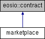

- Создано системой
 1.9.3
1.9.3
|
COOPENOMICS
v1
Кооперативная Экономика
|
Контракт marketplace — кооперативный «Стол заказов» в паевой модели (компонент 68, решение владельца 06.09.2026): пайщик вносит паевой взнос под заказ, кооператив закупает имущество, пайщик получает его как возврат паевого взноса по заявлению, протоколу совета и акту.
Подробнее...
#include <marketplace.hpp>

Открытые члены | |
| marketplace (eosio::name receiver, eosio::name code, eosio::datastream< const char * > ds) | |
| void | createorder (eosio::name coopname, eosio::name orderer, checksum256 order_hash, checksum256 offer_hash, eosio::name offerer, eosio::name delivery_braname, eosio::asset quantity, eosio::asset unit_price, eosio::asset package_size, uint32_t warranty_period_secs, checksum256 batch_hash) |
Заказчик размещает заказ на товар из каталога (Story 4.1). Паевая модель: два кошелька программы оплачивают каждый свою часть — членский взнос участка с внутреннего членского кошелька w.mkt.member (o.mkt.fee), тело со свободного паевого w.mkt.share (o.mkt.lockp), остаток тела с главного паевого w.wal.share (o.mkt.lock). Заявления здесь нет: недостающее пайщик заранее перевёл действием convert по заявлению 1110; членского кошелька обязано хватать на взнос целиком. Подробнее... | |
| void | convert (eosio::name coopname, eosio::name orderer, std::vector< convert_target > targets, document2 convert_statement) |
Перевод паевого взноса во внутренний членский кошелёк «Стола заказов» по Заявлению 1110 — отдельная транзакция до заказа. Заявление пишется на недостающее в кошельках программы: «прошу перевести с баланса моего Цифрового кошелька на баланс ЦПП «Стол заказов» N, из них членский взнос M» (M — взнос за вычетом остатка членского кошелька, N — недостающая часть тела сверх свободного паевого программы плюс M); по кошелькам здесь двигается только членская часть M: o.mkt.conv (w.wal.share → w.mkt.member, Дт 80 / Кт 86). Сумма приходит разбитой по заказам (targets), и на каждый заказ эмитится своя операция с process_hash = order_hash — перевод идёт первым шагом нитки того заказа, который оплачивает. Пустой targets (или нулевые суммы) — действие только публикует заявление. Подробнее... | |
| void | stockorder (eosio::name coopname, eosio::name orderer, checksum256 order_hash, checksum256 offer_hash, eosio::name delivery_braname, eosio::asset quantity, eosio::asset unit_price, eosio::asset package_size, uint32_t warranty_period_secs, checksum256 batch_hash) |
Заказ из обезличенного остатка склада кооператива (requirement 76). Продавец — сам кооператив (offerer == coopname), имущество уже на счёте 10 после ранее закрытых приёмок, поэтому Order создаётся сразу в acceptcoop и идёт только через выдачу (readyissue → issuestmt → … → issueact2). Этапы поставки и выплата поставщику для такого заказа не существуют. Подробнее... | |
| void | cancelorder (eosio::name coopname, eosio::name orderer, checksum256 order_hash) |
Заказчик отменяет заказ до акцепта (Story 4.4). Триггерит o.mkt.unlock. Заказ из остатка кооператива (offerer == coopname) отменяется и в acceptcoop / readyrecv — пока выдача не начата заявлением. Подробнее... | |
| void | expireorder (eosio::name coopname, checksum256 order_hash) |
Backend закрывает Order по сроку: не набранный к концу цикла отсечки (active) либо принятый поставщиком и не привезённый за 48 часов от акцепта (accepted). Полный возврат резерва и членского взноса без удержания, запись стирается. Сроки считает бэкенд; для каждого заказа вызывается отдельный expireorder. Подробнее... | |
| void | closeorder (eosio::name coopname, checksum256 order_hash) |
| Закрыть выданный заказ после выхода гарантийного срока: терминал жизненного цикла, запись стирается из RAM. Вызывается автоматизированной службой по расписанию; до выхода гарантийного срока, при незавершённой выплате поставщику или открытом возврате закрытие отклоняется. Подробнее... | |
| void | acceptorder (eosio::name coopname, eosio::name offerer, checksum256 order_hash) |
Поставщик акцептует один Order (Story 4.5). Без ledger2-операций — статус active → accepted. Backend проходит циклом по orders соответствующего batch'а, вызывая acceptorder per Order. Подробнее... | |
| void | declineorder (eosio::name coopname, eosio::name offerer, checksum256 order_hash) |
Поставщик отказывается от одного Order'а до акцепта (Story 4.5). Per-Order: o.mkt.unlock на total_cost + статус active → cancelled. Backend проходит циклом по orders батча, вызывая declineorder per Order. Подробнее... | |
| void | signsupp (eosio::name coopname, eosio::name offerer, checksum256 order_hash, eosio::name accept_braname, document2 act) |
Поставщик первой подписью на АПП приёмки фиксирует партию по одному Order'у (Story 5.3/5.4). Без ledger2-операций — статус accepted → supply_prepared. Параметр accept_braname указывает приёмный КУ; запись в Order. Подпись валидируется как verify_document_or_fail(act, {offerer}). Backend проходит циклом по orders батча с одинаковым act. Подробнее... | |
| void | signchair (eosio::name coopname, eosio::name signer, checksum256 order_hash, eosio::asset actual_quantity, eosio::asset actual_unit_price, document2 act) |
Председатель приёмного КУ ставит закрывающую подпись на АПП приёмки одного Order'а (Story 5.3/5.4). Per-Order: только o.mkt.purch (Дт 10 / Кт 86). Выплата поставщику (o.mkt.payout) — отдельным lazy action'ом payout после подтверждения кассиром фактического банковского перевода (E11 техдолг 598-16, Locked Decision L12). Авторизация подписи: председатель / trustee / trusted ∈ branches[o.accept_braname]. Backend проходит циклом по orders батча с одинаковым act. Подробнее... | |
| void | payout (eosio::name coopname, checksum256 order_hash) |
Инициация исходящей выплаты поставщику через контракт gateway по одному Order'у (E11 техдолг 598-16, Locked Decision L12). Per-Order: inline-вызов gateway::createoutpay с callback'ами на payconfirm / paydecline. Ledger2-операция o.mkt.payout (Дт 76 / Кт 51) применяется НЕ здесь, а в callback'е payconfirm после действия кассира. Признанный гарантийный долг поставщика удерживается здесь же: o.mkt.deduct (BURN w.mkt.debt) на остаток долга в пределах принятой стоимости, перевод регистрируется на разницу (задача 99D-15). Статус Order'а не меняется; защита от двойного запроса — через order.payout_status (NONE/DECLINED → PENDING). Подробнее... | |
| void | payconfirm (eosio::name coopname, checksum256 outcome_hash) |
Callback от gateway::outcomplete — кассир подтвердил банковский перевод поставщику (E11 техдолг 598-16, Locked Decision L12). Здесь применяется o.mkt.payout (Дт 76 / Кт 51) на принятую стоимость accepted_cost за вычетом удержания, проведённого при инициации (payout_withheld); заказ в статусе refused стирается; иначе payout_status переходит PENDING → COMPLETED. Авторизация: _gateway. outcome_hash совпадает с order.hash (так задано при payout). Подробнее... | |
| void | paydecline (eosio::name coopname, checksum256 outcome_hash, std::string reason) |
Callback от gateway::outdecline — кассир отметил, что банковский перевод не состоялся (E11 техдолг 598-16, Locked Decision L12). Ledger2-операция НЕ применяется; обязательство Кт 76 остаётся открытым. payout_status PENDING → DECLINED; payout_decline_reason сохраняется. Авторизация: _gateway. Подробнее... | |
| void | admitclaim (eosio::name coopname, eosio::name supplier, checksum256 claim_hash) |
Поставщик признал гарантийную претензию: pending → admitted, o.mkt.admit (TRANSFER w.mkt.claim → w.mkt.debt, Дт 76 / Кт 91). Признанная сумма гасится удержанием из следующих выплат поставщику (payout). Несогласие действия в цепи не имеет: сумма остаётся на кошельке непризнанных претензий как основание для иска. Авторизация: кооператив; supplier обязан совпасть с поставщиком претензии. Подробнее... | |
| void | markdown (eosio::name coopname, checksum256 order_hash, eosio::asset amount) |
| Списание уценки по заказу из остатка кооператива (requirement 76). Разница между стоимостью прибытия выданного и фактической суммой выдачи выбывает со счёта 10 в прочие расходы: o.mkt.loss (NONE, Дт 91 / Кт 10). Вместе с o.mkt.consum даёт выбытие по полной стоимости прибытия — на складе ничего не зависает. Вызывает backend после финализации выдачи (сумму считает по выданным позициям). Погашение накопленного на 91 (Дт 86 / Кт 91) — будущий процесс по образцу списания скоропорта. Подробнее... | |
| void | setfee (eosio::name coopname, uint64_t membership_fee_percent) |
| Установка единой ставки членского взноса «Стола заказов» (requirement b6). Одна ставка на весь кооператив (HUNDR_PERCENTS = 100%); задаёт администратор. Применяется к новым заказам; в созданных заказах взнос зафиксирован полем Order.membership_fee. Подробнее... | |
| void | readyissue (eosio::name coopname, eosio::name signer, checksum256 order_hash) |
Оператор участка выдачи отмечает поступление имущества по заказу на свой участок: acceptcoop → readyrecv, current_warehouse_braname = участок выдачи. Подписи и документов нет — заказчику уходит уведомление, что заказ можно забирать. Заменяет прежнюю первую подпись акта (readyissue). Подробнее... | |
| void | issuestmt (eosio::name coopname, eosio::name orderer, checksum256 order_hash, eosio::asset actual_quantity, eosio::asset actual_unit_price, document2 statement, std::string meta) |
Заказчик на пункте выдачи подписывает Заявление о возврате паевого взноса имуществом (1113) на фактический состав после сверки: readyrecv → issuepend. Факт (количество, цена) фиксируется в заказе; тем же действием контракт инлайн ставит повестку совета (soviet::createagenda, тип mktissue, hash = order_hash, обратные вызовы onmktisauth / onmktisdecl). Движений по средствам нет; при факте больше заказа заранее проверяется, что на доплату хватает паевых кошельков (свободный паевой программы плюс Цифровой кошелёк), а на довзнос участка — внутреннего членского кошелька. Подробнее... | |
| void | onmktisauth (eosio::name coopname, checksum256 hash, document2 authorization) |
Обратный вызов совета: решение о возврате паевого взноса имуществом принято — issuepend → issueauth, Протокол (1114) сохраняется в заказе. Единственно допустимая авторизация — _soviet. Подробнее... | |
| void | onmktisdecl (eosio::name coopname, checksum256 hash, std::string reason) |
Обратный вызов совета: отказ по заявлению либо просрочка повестки — issuepend → readyrecv, документы выдачи снимаются, факт возвращается к заказу. Движений по средствам нет. Подробнее... | |
| void | issueact1 (eosio::name coopname, eosio::name orderer, checksum256 order_hash, document2 act) |
Первая подпись Акта приёма-передачи (1115) заказчиком во исполнение протокола совета: issueauth → issueact1. Без движений по средствам. Подробнее... | |
| void | issueact2 (eosio::name coopname, eosio::name delivery_signer, checksum256 order_hash, document2 act) |
Закрывающая подпись Акта приёма-передачи председателем (доверенным, оператором) участка выдачи: issueact1 → received. Только здесь идут движения: корректировка по факту (o.mkt.unlock при факте меньше, o.mkt.lockp / o.mkt.lock при факте больше), возврат паевого взноса имуществом o.mkt.consum (Дт 80 / Кт 10) на фактическую сумму, пересчёт членского взноса участка (o.mkt.refund / o.mkt.fee с членского кошелька) и зачисление его участку (branch::accrue). Открывается гарантийное окно; акт публикуется в реестре документов пакетом процесса заказа. Подробнее... | |
| void | cancelissue (eosio::name coopname, eosio::name signer, checksum256 order_hash) |
Оператор участка отменяет начатую выдачу: из issueauth / issueact1 обратно в readyrecv; документы выдачи снимаются, резерв не трогается. Из issuepend отмена невозможна — повестка совета открыта. Подробнее... | |
| void | submretrn (eosio::name coopname, eosio::name orderer, checksum256 request_hash, checksum256 original_order_hash, eosio::asset actual_quantity, std::string reason_text, std::vector< checksum256 > photos, document2 statement) |
| Пайщик подаёт заявление на гарантийный возврат (Story 7.1). Подробнее... | |
| void | aprretrem (eosio::name coopname, eosio::name signer, eosio::name braname, checksum256 request_hash) |
Председатель удалённо одобряет очный визит (Story 7.2). Авторизация: подписант ∈ branches[braname]; параметр braname фиксирует КУ, в котором рассматривается заявление. Подробнее... | |
| void | rejretrem (eosio::name coopname, eosio::name signer, eosio::name braname, checksum256 request_hash, std::string reason) |
| Председатель удалённо отказывает (Story 7.2). Авторизация: подписант ∈ branches[braname]. Подробнее... | |
| void | accretrn (eosio::name coopname, eosio::name signer, eosio::name braname, checksum256 request_hash, document2 statement, std::string meta, document2 reclamation) |
Оператор участка принимает имущество у стойки (паевая модель): approvvisit → retpend. Оператор подписывает Заявление в совет об отмене сделки (1116; statement — только его подпись) и тем же действием контракт ставит повестку совета (soviet::createagenda, тип mktretrn, hash = request_hash, обратные вызовы onmktrtauth / onmktrtdecl). Движений по средствам нет — баланс заказчика восстанавливается только по решению совета. Авторизация: подписант ∈ branches[braname]. Подробнее... | |
| void | rejretrn (eosio::name coopname, eosio::name signer, eosio::name braname, checksum256 request_hash, std::string reason) |
| Председатель отказывает на очном осмотре (Story 7.3). Авторизация: подписант ∈ branches[braname]. Подробнее... | |
| void | onmktrtauth (eosio::name coopname, checksum256 hash, document2 authorization) |
Обратный вызов совета: сделка отменена, имущество на складе — retpend → ∅. Одной транзакцией: o.mkt.return (ISSUE w.mkt.share, Дт 10 / Кт 80), возврат членского взноса участка из общего кошелька (branch::retfee) и его сторно заказчику (o.mkt.refund). Запись заявки стирается; протокол (1117) уходит в пакет документов заказа через контракт soviet. Единственно допустимая авторизация — _soviet. Подробнее... | |
| void | onmktrtdecl (eosio::name coopname, checksum256 hash, std::string reason) |
Обратный вызов совета: отказ в отмене сделки — retpend → retdecl. Имущество остаётся на участке и ждёт заказчика; движений нет. Подробнее... | |
| void | handback (eosio::name coopname, eosio::name signer, eosio::name braname, checksum256 request_hash) |
Оператор участка выдал имущество заказчику обратно после отказа совета (retdecl); пока повестка открыта, выдача обратно недоступна. Документа нет — имущество участок юридически не принимал. Запись заявки стирается, заказ остаётся выданным с прежним гарантийным окном. Авторизация: подписант ∈ branches[braname]. Подробнее... | |
| void | payretfee (eosio::name coopname, checksum256 request_hash) |
Довнесение членского взноса по гарантийному возврату, ждавшему пополнения общего кошелька участка: feepend → ∅ (задача 99D-15). o.brn.retfee (общий кошелёк участка → пул взносов) и o.mkt.refund (пул → членский кошелёк программы заказчика). Участок — из заказа. Зовёт бэкенд по расписанию, пока branch::retfee не пройдёт. Авторизация: кооператив. Подробнее... | |
| void | propwroff (eosio::name coopname, eosio::name proposed_by, checksum256 proposal_hash, std::vector< wroff_item > items, document2 statement, std::string meta) |
Backend выносит проект списания на повестку совета (Story 8.1). Без ledger2-операций — только создание proposal с N позициями (статус proposed) и тем же inline-вызовом ставит повестку: soviet::createagenda от permission_level{_marketplace, active} с callback_contract=marketplace, confirm_callback=onmktwoauth, decline_callback=onmktwodecl, type=mktwroff, hash=proposal_hash, statement (Заявление 1106). Проект может подаваться председателем (за подписью) либо автоматически — мост повестки целиком на контракте, без участия backend. Подробнее... | |
| void | onmktwoauth (eosio::name coopname, checksum256 hash, document2 authorization) |
Callback от soviet::exec после авторизации Протокола совета (registry 1105) председателем (Story 8.4). PROPOSED → AUTHORIZED; сохраняется authorization в wroffprops.protocol. Цикл per-item списания запускает backend через execwroff после получения этой дельты. Подробнее... | |
| void | onmktwodecl (eosio::name coopname, checksum256 hash, std::string reason) |
Callback от soviet::cancelexprd (или от любого decline-эффекта в soviet) — повестка отклонена или просрочена (Story 8.4). PROPOSED → REJECTED; reason сохраняется в wroffprops.reject_reason. Без ledger2-движений. Подробнее... | |
| void | execwroff (eosio::name coopname, eosio::name signer, checksum256 proposal_hash, uint64_t item_index) |
Backend исполняет одну позицию авторизованного проекта списания (Story 8.4). Per-item: o.mkt.wroff, items[item_index].executed = true. Когда все items исполнены, статус AUTHORIZED → EXECUTED. Подробнее... | |
| void | confirmwroff (eosio::name coopname, eosio::name signer, checksum256 proposal_hash, eosio::name braname, document2 memo) |
| Председатель кооперативного участка подтверждает фактическое списание со склада своего КУ по авторизованному советом проекту (ручной шаг стола ПВЗ). Подробнее... | |
| void | migrate () |
Перенос открытых обязательств перед поставщиками на кошелёк к оплате w.mkt.topay (задача 99D-16). По каждому поставщику считает непогашенное по принятым заказам без завершённой выплаты (принятая стоимость минус удержанное при инициации) и начисляет только разницу с текущим остатком кошелька (o.mig.topay) — повторный запуск ничего не удваивает. Обходит все кооперативы; вызывается при установке контракта, как migrate остальных контрактов. Авторизация: _marketplace. Подробнее... | |
Контракт marketplace — кооперативный «Стол заказов» в паевой модели (компонент 68, решение владельца 06.09.2026): пайщик вносит паевой взнос под заказ, кооператив закупает имущество, пайщик получает его как возврат паевого взноса по заявлению, протоколу совета и акту.
Реализует canonical actions трёх процессов из YAML-стандартов:
propwroff (запись wroffprops::proposed) + soviet::createagenda(type=mktwroff, callback=onmktwoauth/onmktwodecl). После голосования совета и подписи Протокола (registry 1105) chairman'ом soviet::exec автоматически вызывает callback onmktwoauth (PROPOSED → AUTHORIZED, сохраняется protocol2) или onmktwodecl (PROPOSED → REJECTED). Только после AUTHORIZED backend циклом по items вызывает execwroff per-item (o.mkt.wroff на каждой позиции).Все per-batch операции на on-chain выполняются per-Order (бэкенд проходит циклом по Order'ам соответствующего batch'а, объединяя их по batch_hash). Векторов order_hashes в actions нет — это ограничение на размер транзакции в Antelope (тысячи orders в одной транзакции не пройдут).
Все ledger2-движения средств — через Ledger2::apply(_marketplace, …), никаких прямых wallet/account-операций. 13 marketplace-операций зарегистрированы в lib/core/ledger2/operations.hpp (OPERATION_REGISTRY).
Composite-операции (consum+consum2, return+return2, wroff+wroff2) — последовательные Ledger2::apply в одной транзакции Antelope (атомарность через single-action wrapper).
Авторизация подписей под актами / решениями привязана к кооперативному участку (КУ) через контракт branch и helper Branch::is_user_authorized(coopname, braname, signer) — председатель КУ может делегировать подпись доверенному лицу из coobranch.trusted[].
Источник правды по логике actions, гардам, state-переходам и операциям — три YAML-файла рядом с этим .hpp:
p.mkt.supply.standard.yamlp.mkt.return.standard.yamlp.mkt.wroff.standard.yamlDonor-actions старой клиринговой модели (FR19a, AR30) удалены вместе с соответствующими таблицами Marketplace::request/segment/shipment.
|
inline |
| void marketplace::acceptorder | ( | eosio::name | coopname, |
| eosio::name | offerer, | ||
| checksum256 | order_hash | ||
| ) |
Поставщик акцептует один Order (Story 4.5). Без ledger2-операций — статус active → accepted. Backend проходит циклом по orders соответствующего batch'а, вызывая acceptorder per Order.
Поставщик акцептует один Order (Story 4.5, p.mkt.supply).
Без ledger2-операций — статус active → accepted. Backend проходит циклом по orders соответствующего batch'а, вызывая acceptorder per Order (контракт не принимает векторов order_hash — единичные транзакции масштабируются на любой размер batch'а).
После акцепта поставщик считается обязанным доставить партию: отдельная подпись «готов отгрузить» (бывший prepship) удалена из процесса — следующий шаг сразу signsupp с актом приёмки.
Guards:
| void marketplace::accretrn | ( | eosio::name | coopname, |
| eosio::name | signer, | ||
| eosio::name | braname, | ||
| checksum256 | request_hash, | ||
| document2 | statement, | ||
| std::string | meta, | ||
| document2 | reclamation | ||
| ) |
Оператор участка принимает имущество у стойки (паевая модель): approvvisit → retpend. Оператор подписывает Заявление в совет об отмене сделки (1116; statement — только его подпись) и тем же действием контракт ставит повестку совета (soviet::createagenda, тип mktretrn, hash = request_hash, обратные вызовы onmktrtauth / onmktrtdecl). Движений по средствам нет — баланс заказчика восстанавливается только по решению совета. Авторизация: подписант ∈ branches[braname].
Оператор участка принимает имущество у стойки — гарантийный возврат в паевой модели (компонент 68, задачи 99D-9 / 99D-12): approvvisit → retpend.
Оператор осмотрел имущество, принял его под свою материальную ответственность и подписал Заявление в совет об отмене сделки (registry 1116): какой заказ и какое имущество принято, результат осмотра, причина обращения пайщика из рекламации (1106, лежит в return_request.statement), суммы паевого и членского взносов к восстановлению. statement несёт только подпись оператора: пайщик ничего не вносит, сделка отменяется (решение владельца 08.09.2026). reclamation — та же рекламация 1106, что лежит в заявке, со второй подписью оператора (канон DocumentAggregate, без регенерации): с двумя подписями она уйдёт поставщику как гарантийная претензия при исполнении решения совета (задача 99D-13). Тем же действием контракт ставит повестку совета: инлайн soviet::createagenda от permission_level{_marketplace, active} с type=mktretrn, hash=request_hash, документом повестки — этим заявлением и обратными вызовами onmktrtauth / onmktrtdecl. Совет лишь легитимизирует решение оператора.
Движений по средствам нет: имущество лежит на участке, баланс заказчика восстанавливается только по решению совета (onmktrtauth). При отказе или без решения оператор выдаёт имущество обратно (handback).
Guards:
| void marketplace::admitclaim | ( | eosio::name | coopname, |
| eosio::name | supplier, | ||
| checksum256 | claim_hash | ||
| ) |
Поставщик признал гарантийную претензию: pending → admitted, o.mkt.admit (TRANSFER w.mkt.claim → w.mkt.debt, Дт 76 / Кт 91). Признанная сумма гасится удержанием из следующих выплат поставщику (payout). Несогласие действия в цепи не имеет: сумма остаётся на кошельке непризнанных претензий как основание для иска. Авторизация: кооператив; supplier обязан совпасть с поставщиком претензии.
Поставщик признал гарантийную претензию (p.mkt.claim, задача 99D-13): pending → admitted.
Претензия выставлена контрактом при исполнении решения совета об отмене сделки (onmktrtauth): имущество оплачено поставщику, но вернулось на склад по рекламации пайщика с двумя подписями. По умолчанию поставщик не согласен — сумма лежит на кошельке непризнанных претензий сколько угодно, никаких действий кооператив не делает. Признание переводит сумму с кошелька непризнанных претензий на кошелёк признанного долга поставщика — o.mkt.admit (TRANSFER w.mkt.claim → w.mkt.debt, Дт 76 / Кт 91): у кооператива возникает дебиторка поставщика, которая гасится удержанием из следующих выплат ему (payout / payconfirm, o.mkt.deduct).
Guards: actor coopname; supplier — поставщик претензии; статус pending.
| void marketplace::aprretrem | ( | eosio::name | coopname, |
| eosio::name | signer, | ||
| eosio::name | braname, | ||
| checksum256 | request_hash | ||
| ) |
Председатель удалённо одобряет очный визит (Story 7.2). Авторизация: подписант ∈ branches[braname]; параметр braname фиксирует КУ, в котором рассматривается заявление.
Председатель удалённо одобряет очный визит (Story 7.2, p.mkt.return).
Без ledger2-операций и без документов. Процедурное действие: статус return_request pending_review → approved_for_visit фиксируется вместе с actor + blockchain_actions[at]. Подпись на документе на удалённом этапе не требуется — она нужна только при принятии возврата (accretrn).
Guards:
braname) — участок выдачи исходного заказа.signer) авторизован для указанного КУ (braname): председатель / trustee / trusted в branches[braname].| void marketplace::cancelissue | ( | eosio::name | coopname, |
| eosio::name | signer, | ||
| checksum256 | order_hash | ||
| ) |
Оператор участка отменяет начатую выдачу: из issueauth / issueact1 обратно в readyrecv; документы выдачи снимаются, резерв не трогается. Из issuepend отмена невозможна — повестка совета открыта.
Оператор участка выдачи отменяет начатую выдачу (паевая модель, компонент 68): заказчик не подписал акт, ушёл или отказался после решения совета. Из issueauth / issueact1 обратно в readyrecv; заявление, протокол и подписи акта снимаются, факт возвращается к заказу. Резерв не трогается — движений по средствам нет.
Из issuepend отмена невозможна: повестка совета открыта, её исход придёт обратным вызовом (onmktisdecl вернёт заказ в readyrecv сам).
Guards:
| void marketplace::cancelorder | ( | eosio::name | coopname, |
| eosio::name | orderer, | ||
| checksum256 | order_hash | ||
| ) |
Заказчик отменяет заказ до акцепта (Story 4.4). Триггерит o.mkt.unlock. Заказ из остатка кооператива (offerer == coopname) отменяется и в acceptcoop / readyrecv — пока выдача не начата заявлением.
Заказчик отменяет заказ / отказывается от получения позиции (Story 4.4 + удержание при отказе, p.mkt.supply).
Граница удержания — акцепт поставщиком (acceptorder). До акцепта поставщик ещё не взял обязательство и ничего не везёт — отмена бесплатна (полный возврат резерва и членского взноса). После акцепта поставщик уже принял заявку и доставляет имущество, кооператив несёт риск его оплаты — отказ пайщика удерживает 50% (тела заказа и взноса) в общий кошелёк КУ; имущество остаётся на складе КУ, вторая половина возвращается пайщику.
Отказ после приёмки (acceptcoop) не отменяет долг поставщику: имущество оприходовано (Дт 10 / Кт 76) и выплата по нему идёт своим чередом. Пока она не завершена, заказ стирать нельзя — обратные вызовы шлюза payconfirm / paydecline и повторная инициация ищут его по хэшу, а отказ обратного вызова откатил бы подтверждение кассира. Поэтому такой заказ переходит в статус refused и живёт до подтверждения выплаты, которое стирает его само (задача 99D-14). Если выплата уже завершена — стирается сразу.
Guards:
| void marketplace::closeorder | ( | eosio::name | coopname, |
| checksum256 | order_hash | ||
| ) |
Закрыть выданный заказ после выхода гарантийного срока: терминал жизненного цикла, запись стирается из RAM. Вызывается автоматизированной службой по расписанию; до выхода гарантийного срока, при незавершённой выплате поставщику или открытом возврате закрытие отклоняется.
Backend закрывает выданный заказ после выхода гарантийного срока (p.mkt.supply; принцип конечного жизненного цикла RAM-записей).
Терминал жизненного цикла выданного заказа: запись стирается из RAM, история заказа (акты, выплата, гарантия) остаётся в журнале действий. Вызывается автоматизированной службой по расписанию; контракт — финальный судья условий закрытия, до их наступления закрытие отклоняется:
Guards:
| void marketplace::confirmwroff | ( | eosio::name | coopname, |
| eosio::name | signer, | ||
| checksum256 | proposal_hash, | ||
| eosio::name | braname, | ||
| document2 | memo | ||
| ) |
Председатель кооперативного участка подтверждает фактическое списание со склада своего КУ по авторизованному советом проекту (ручной шаг стола ПВЗ).
Председатель кооперативного участка подтверждает фактическое списание со склада своего КУ по авторизованному советом проекту (ручной шаг стола ПВЗ, p.mkt.wroff).
Совет лишь принимает решение о допустимости списания (proposed → authorized); фактическое выбытие имущества со склада инициирует председатель КУ, подписывая Служебную записку о списании (registry 1111). Один вызов закрывает все неисполненные позиции одного КУ (braname) за одну транзакцию: per-КУ гранулярность разбивает большой проект так, чтобы протокол поместился в лимит транзакции, и привязывает выбытие к подписи ответственного за склад.
Эффект:
braname (Дт 91 / Кт 10), как в execwroff.memo публикуется в реестр документов (make_complete_document, package = proposal_hash).Guards:
signer уполномочен для КУ braname (branches[braname].is_user_authorized) — председатель КУ или его доверенное лицо;Совет своим решением (proposed → authorized через onmktwoauth) лишь признаёт списание допустимым. Имущество физически выбывает со склада только после того, как ответственный за склад председатель КУ подпишет Служебную записку о списании (registry 1111) — это и делает данный action.
Гранулярность — по одному КУ (braname) за вызов: проект списания может охватывать несколько участков, и каждый председатель закрывает только свою часть. Все неисполненные позиции данного КУ списываются в одной транзакции (Ledger2::apply o.mkt.wroff, Дт 91 / Кт 10 — как в execwroff). Служебная записка публикуется в реестр документов в пакете процесса списания (package = proposal_hash). Исполнение последней позиции проекта (по всем КУ) стирает запись из RAM — терминал жизненного цикла.
| void marketplace::convert | ( | eosio::name | coopname, |
| eosio::name | orderer, | ||
| std::vector< convert_target > | targets, | ||
| document2 | convert_statement | ||
| ) |
Перевод паевого взноса во внутренний членский кошелёк «Стола заказов» по Заявлению 1110 — отдельная транзакция до заказа. Заявление пишется на недостающее в кошельках программы: «прошу перевести с баланса моего Цифрового кошелька на баланс ЦПП «Стол заказов» N, из них членский взнос M» (M — взнос за вычетом остатка членского кошелька, N — недостающая часть тела сверх свободного паевого программы плюс M); по кошелькам здесь двигается только членская часть M: o.mkt.conv (w.wal.share → w.mkt.member, Дт 80 / Кт 86). Сумма приходит разбитой по заказам (targets), и на каждый заказ эмитится своя операция с process_hash = order_hash — перевод идёт первым шагом нитки того заказа, который оплачивает. Пустой targets (или нулевые суммы) — действие только публикует заявление.
Перевод паевого взноса пайщика во внутренний членский кошелёк «Стола заказов» по Заявлению 1110 (паевая модель, уточнения владельца 06–07.09.2026). Первое действие транзакции оформления, перед заказами, которые оплачивает. Заявление пишется на то, чего не хватило в кошельках программы: «прошу перевести с баланса моего Цифрового кошелька на баланс ЦПП «Стол заказов» N, из них членский взнос M», где M — взнос за вычетом остатка членского кошелька, N — недостающая часть тела (сверх свободного паевого программы) плюс M. Здесь двигается только членская часть M — паевая часть тела уйдёт своим путём при createorder / stockorder.
Заявление одно на всё оформление, а нитка процесса ведётся по заказу, поэтому сумма приходит разбитой по заказам (targets) и на каждый заказ эмитится своя o.mkt.conv с process_hash = order_hash (TRANSFER w.wal.share → w.mkt.member, Дт 80 / Кт 86). Перевод становится первой операцией нитки того заказа, который оплачивает: своей нитки без анкера он больше не заводит (уточнение владельца 08.09.2026). Пустой targets — действие только публикует заявление.
Guards: суммы адресатов ≥ 0 в _root_govern_symbol; заявление подписано заказчиком; заказчик — активный пайщик; на Цифровом кошельке достаточно паевого на всю сумму перевода.
| void marketplace::createorder | ( | eosio::name | coopname, |
| eosio::name | orderer, | ||
| checksum256 | order_hash, | ||
| checksum256 | offer_hash, | ||
| eosio::name | offerer, | ||
| eosio::name | delivery_braname, | ||
| eosio::asset | quantity, | ||
| eosio::asset | unit_price, | ||
| eosio::asset | package_size, | ||
| uint32_t | warranty_period_secs, | ||
| checksum256 | batch_hash | ||
| ) |
Заказчик размещает заказ на товар из каталога (Story 4.1). Паевая модель: два кошелька программы оплачивают каждый свою часть — членский взнос участка с внутреннего членского кошелька w.mkt.member (o.mkt.fee), тело со свободного паевого w.mkt.share (o.mkt.lockp), остаток тела с главного паевого w.wal.share (o.mkt.lock). Заявления здесь нет: недостающее пайщик заранее перевёл действием convert по заявлению 1110; членского кошелька обязано хватать на взнос целиком.
Заказчик размещает заказ на товар (Story 4.1, p.mkt.supply шаг 1).
Движения (паевая модель, компонент 68, уточнения владельца 06–07.09.2026): два кошелька программы оплачивают каждый свою часть, и лишь недостающее переводится с Цифрового кошелька по заявлению 1110 (действие convert первым в той же транзакции оформления):
o.mkt.fee — членский взнос участка с внутреннего членского кошелька w.mkt.member (сюда возвращаются членские средства при отменах и гарантийных возвратах; кошелька обязано хватать на взнос целиком);o.mkt.lockp — тело заказа со свободного паевого «Стола заказов» w.mkt.share (сюда возвращаются паевые средства при отменах, недовыдачах и гарантийных возвратах), сколько там есть;o.mkt.lock — остаток тела с главного паевого w.wal.share. Тело всегда паевое, обе части — один резерв w.mkt.order (без проводок).Guards (из p.mkt.supply.standard.yaml + Locked Decision L6):
get_participant_or_fail).delivery_braname существует в branches (КУ выдачи задаётся пайщиком из доступных и неизменен после создания Order'а).ledger2::walletop через assert_program_signed (cross-contract в wallet::users.programs[]) при первом TRANSFER на USER_SHARED-кошельке программы (w.mkt.order).Сообщения проверок — для прямого показа пользователю (UI ловит check'ом).
| void marketplace::declineorder | ( | eosio::name | coopname, |
| eosio::name | offerer, | ||
| checksum256 | order_hash | ||
| ) |
Поставщик отказывается от одного Order'а до акцепта (Story 4.5). Per-Order: o.mkt.unlock на total_cost + статус active → cancelled. Backend проходит циклом по orders батча, вызывая declineorder per Order.
Поставщик отказывается от одного Order'а (Story 4.5 + отказ в приёмке, p.mkt.supply).
Два случая, оба со стороны поставщика и оба без штрафа — полный возврат резерва и членского взноса заказчику (вина не его):
Per-Order: o.mkt.unlock на total_cost (TRANSFER w.mkt.order → w.mkt.share — паевой резерв возвращается на свободный паевой «Стола заказов» заказчика) + полный возврат взноса + erase. Backend проходит циклом по неотмеченным в приёмке orders — векторов order_hash нет.
Guards:
| void marketplace::execwroff | ( | eosio::name | coopname, |
| eosio::name | signer, | ||
| checksum256 | proposal_hash, | ||
| uint64_t | item_index | ||
| ) |
Backend исполняет одну позицию авторизованного проекта списания (Story 8.4). Per-item: o.mkt.wroff, items[item_index].executed = true. Когда все items исполнены, статус AUTHORIZED → EXECUTED.
Backend исполняет одну позицию авторизованного советом проекта списания скоропорта (Story 8.4, p.mkt.wroff).
Защита от газового лимита (тысячи позиций в одной транзакции Antelope не помещаются) — backend проходит цикл и вызывает execwroff per item.
Guards:
onmktwoauth уже отработал);signer) авторизован для КУ-источника (branches[items[item_index].braname]).Per-item операция:
Вызывается ТОЛЬКО после того, как совет авторизовал проект (status = AUTHORIZED через callback onmktwoauth). Backend проходит циклом по неисполненным позициям, вызывая execwroff(proposal_hash, item_index) per item — это снимает ограничение на максимальный размер протокола.
Исполнение последней позиции (все items[i].executed == true) — терминал жизненного цикла: запись проекта стирается из RAM, история — в журнале действий и решении совета.
Подписанный советом protocol уже лежит в proposal.protocol (положен callback'ом onmktwoauth), отдельно его передавать не нужно.
| void marketplace::expireorder | ( | eosio::name | coopname, |
| checksum256 | order_hash | ||
| ) |
Backend закрывает Order по сроку: не набранный к концу цикла отсечки (active) либо принятый поставщиком и не привезённый за 48 часов от акцепта (accepted). Полный возврат резерва и членского взноса без удержания, запись стирается. Сроки считает бэкенд; для каждого заказа вызывается отдельный expireorder.
Backend закрывает один Order по таймауту цикла отсечки заявок (Story 4.3, p.mkt.supply).
Вызывается бэкендом после расчёта по batch'у: если за время цикла Offer'а threshold не достигнут, бэкенд проходит циклом по всем active Order'ам этого batch'а и для каждого вызывает expireorder. Контракт не знает про threshold — это вычисление backend'а; on-chain — только закрытие конкретного Order'а с возвратом резерва.
Per-Order: o.mkt.unlock на total_cost (TRANSFER w.mkt.order → w.mkt.share — возврат паевого резерва на свободный паевой «Стола заказов» заказчика) + статус active → cancelled.
Второй случай — непоставка (решение владельца 10.09.2026, задача 99D-16): поставщик принял заказ и за 48 часов от акцепта не привёз. Бэкенд по расписанию закрывает такой заказ тем же действием с полным возвратом без удержания — вина не пайщика. Срок контракт не проверяет: отметки времени акцепта в заказе нет, её держит бэкенд.
Guards:
| void marketplace::handback | ( | eosio::name | coopname, |
| eosio::name | signer, | ||
| eosio::name | braname, | ||
| checksum256 | request_hash | ||
| ) |
Оператор участка выдал имущество заказчику обратно после отказа совета (retdecl); пока повестка открыта, выдача обратно недоступна. Документа нет — имущество участок юридически не принимал. Запись заявки стирается, заказ остаётся выданным с прежним гарантийным окном. Авторизация: подписант ∈ branches[braname].
Оператор участка выдал имущество заказчику обратно — гарантийный возврат в паевой модели (компонент 68). Допустимо только из retdecl (совет отказал). Пока повестка открыта, имущество ждёт решения совета: выдача обратно до решения стирала заявку, и потом решение совета нельзя было ни исполнить, ни снять истечением (решение владельца 10.09.2026, задача 99D-16).
Документа нет — имущество участок юридически не принимал. Запись заявки стирается (newdeclined для заявления в пакет документов заказа), заказ остаётся выданным с прежним гарантийным окном.
Guards:
| void marketplace::issueact1 | ( | eosio::name | coopname, |
| eosio::name | orderer, | ||
| checksum256 | order_hash, | ||
| document2 | act | ||
| ) |
Первая подпись Акта приёма-передачи (1115) заказчиком во исполнение протокола совета: issueauth → issueact1. Без движений по средствам.
Первая подпись Акта приёма-передачи имущества в счёт возврата паевого взноса (registry 1115) заказчиком — паевая модель выдачи (компонент 68). Ставится устройством заказчика по получении протокола без нового нажатия; при обрыве связи досылается при возвращении в приложение.
Эффект: issueauth → issueact1, issue_act1 = акт. Без движений по средствам — до закрывающей подписи председателя ничего не состоялось.
Guards:
| void marketplace::issueact2 | ( | eosio::name | coopname, |
| eosio::name | delivery_signer, | ||
| checksum256 | order_hash, | ||
| document2 | act | ||
| ) |
Закрывающая подпись Акта приёма-передачи председателем (доверенным, оператором) участка выдачи: issueact1 → received. Только здесь идут движения: корректировка по факту (o.mkt.unlock при факте меньше, o.mkt.lockp / o.mkt.lock при факте больше), возврат паевого взноса имуществом o.mkt.consum (Дт 80 / Кт 10) на фактическую сумму, пересчёт членского взноса участка (o.mkt.refund / o.mkt.fee с членского кошелька) и зачисление его участку (branch::accrue). Открывается гарантийное окно; акт публикуется в реестре документов пакетом процесса заказа.
Закрывающая подпись Акта приёма-передачи (registry 1115) председателем, доверенным или оператором участка выдачи — паевая модель (компонент 68, задача 99D-6). Единственная точка движений по выдаче.
В одной транзакции по факту, зафиксированному на issuestmt:
issueact1 → received, гарантийное окно, issue_act2 = акт, Soviet::make_complete_document для акта (пакет = order_hash).Имущество передаётся заказчику только после того, как заказ показан как полученный на экране оператора — так исключается «выдали, а цепь не приняла».
Guards:
verify_document_or_fail). | void marketplace::issuestmt | ( | eosio::name | coopname, |
| eosio::name | orderer, | ||
| checksum256 | order_hash, | ||
| eosio::asset | actual_quantity, | ||
| eosio::asset | actual_unit_price, | ||
| document2 | statement, | ||
| std::string | meta | ||
| ) |
Заказчик на пункте выдачи подписывает Заявление о возврате паевого взноса имуществом (1113) на фактический состав после сверки: readyrecv → issuepend. Факт (количество, цена) фиксируется в заказе; тем же действием контракт инлайн ставит повестку совета (soviet::createagenda, тип mktissue, hash = order_hash, обратные вызовы onmktisauth / onmktisdecl). Движений по средствам нет; при факте больше заказа заранее проверяется, что на доплату хватает паевых кошельков (свободный паевой программы плюс Цифровой кошелёк), а на довзнос участка — внутреннего членского кошелька.
Заказчик на пункте выдачи подписывает Заявление о возврате паевого взноса имуществом (registry 1113) на фактический состав после сверки (паевая модель, компонент 68, задача 99D-6).
Эффект:
actual_quantity, fact_cost = количество × фактическая цена за единицу отпуска);issue_statement = заявление, статус readyrecv → issuepend;soviet::createagenda от permission_level{_marketplace, active} с type=mktissue, hash=order_hash, обратными вызовами onmktisauth / onmktisdecl и заявлением как документом повестки. Мост повестки целиком на контракте — как в propwroff.Движений по средствам нет: до закрывающей подписи акта ничего не состоялось. Достаточность средств на доплату при факте больше заказа проверяется здесь заранее, чтобы отказ был виден до решения совета: доплата тела — со свободного паевого «Стола заказов», остаток с Цифрового кошелька; довзнос участка — с внутреннего членского кошелька (недостающее пайщик заранее перевёл действием convert по заявлению 1110); на issueact2 проверка повторяется.
Guards:
markdown);verify_document_or_fail). | void marketplace::markdown | ( | eosio::name | coopname, |
| checksum256 | order_hash, | ||
| eosio::asset | amount | ||
| ) |
Списание уценки по заказу из остатка кооператива (requirement 76). Разница между стоимостью прибытия выданного и фактической суммой выдачи выбывает со счёта 10 в прочие расходы: o.mkt.loss (NONE, Дт 91 / Кт 10). Вместе с o.mkt.consum даёт выбытие по полной стоимости прибытия — на складе ничего не зависает. Вызывает backend после финализации выдачи (сумму считает по выданным позициям). Погашение накопленного на 91 (Дт 86 / Кт 91) — будущий процесс по образцу списания скоропорта.
Списание уценки при выдаче (requirement 76, вопрос 4; для заказов поставщика — решение владельца 10.09.2026, p.mkt.supply).
Имущество оприходовано на счёт 10 по цене прибытия, а выдано пайщику могло быть дешевле: остаток кооператива публикуется с уценкой, а брак внутри неделимой упаковки оператор отражает ценой на месте. issueact2 (o.mkt.consum) закрывает Кт 10 только на фактическую сумму выдачи — без этого действия разница зависала бы на складе, которого физически уже нет. Здесь разница выбывает в прочие расходы:
o.mkt.loss (NONE, Дт 91 / Кт 10) — кошельки не двигаются, чисто бухгалтерская проводка на сумму уценки.Вместе consum + loss дают выбытие по полной стоимости прибытия. Накопленный расход на счёте 91 погашается ПОЗЖЕ отдельным процессом (Дт 86 / Кт 91) по образцу списания скоропорта через решение совета — этот шаг зафиксирован и пока не реализован.
Вызывает backend сразу после финализации выдачи: сумму уценки он считает точно по выданным складским позициям (цены прибытия у позиций одного заказа могут отличаться — FIFO-резерв), контракту эта аналитика недоступна.
Guards:
| void marketplace::migrate | ( | ) |
Перенос открытых обязательств перед поставщиками на кошелёк к оплате w.mkt.topay (задача 99D-16). По каждому поставщику считает непогашенное по принятым заказам без завершённой выплаты (принятая стоимость минус удержанное при инициации) и начисляет только разницу с текущим остатком кошелька (o.mig.topay) — повторный запуск ничего не удваивает. Обходит все кооперативы; вызывается при установке контракта, как migrate остальных контрактов. Авторизация: _marketplace.
| void marketplace::onmktisauth | ( | eosio::name | coopname, |
| checksum256 | hash, | ||
| document2 | authorization | ||
| ) |
Обратный вызов совета: решение о возврате паевого взноса имуществом принято — issuepend → issueauth, Протокол (1114) сохраняется в заказе. Единственно допустимая авторизация — _soviet.
Обратный вызов от soviet::exec после утверждения Протокола решения совета о возврате паевого взноса имуществом (registry 1114) — паевая модель выдачи (компонент 68). Сигнатура (coopname, hash, authorization) задана AUTHORIZE_CALLBACK_SIGNATURE; единственно допустимая авторизация — _soviet.
Эффект: issuepend → issueauth, протокол сохраняется в issue_protocol. Дальше заказчик ставит первую подпись акта (issueact1).
| void marketplace::onmktisdecl | ( | eosio::name | coopname, |
| checksum256 | hash, | ||
| std::string | reason | ||
| ) |
Обратный вызов совета: отказ по заявлению либо просрочка повестки — issuepend → readyrecv, документы выдачи снимаются, факт возвращается к заказу. Движений по средствам нет.
Обратный вызов от soviet после отказа по заявлению о возврате паевого взноса имуществом или истечения срока повестки (паевая модель выдачи, компонент 68). Сигнатура (coopname, hash, reason) — DECLINE_CALLBACK_SIGNATURE; единственно допустимая авторизация — _soviet.
Эффект: issuepend → readyrecv, документы выдачи снимаются, факт возвращается к заказу. Резерв не трогается, движений по средствам нет. Причина остаётся в журнале действий и в решении совета.
| void marketplace::onmktrtauth | ( | eosio::name | coopname, |
| checksum256 | hash, | ||
| document2 | authorization | ||
| ) |
Обратный вызов совета: сделка отменена, имущество на складе — retpend → ∅. Одной транзакцией: o.mkt.return (ISSUE w.mkt.share, Дт 10 / Кт 80), возврат членского взноса участка из общего кошелька (branch::retfee) и его сторно заказчику (o.mkt.refund). Запись заявки стирается; протокол (1117) уходит в пакет документов заказа через контракт soviet. Единственно допустимая авторизация — _soviet.
Обратный вызов от soviet::exec после утверждения Протокола решения совета об отмене сделки по гарантийному возврату (registry 1117) — паевая модель (компонент 68, задачи 99D-9 / 99D-12). Совет легитимизировал решение оператора участка (заявление 1116): сделка по возврату паевого взноса имуществом отменяется в части принятого имущества. Сигнатура (coopname, hash, authorization) — AUTHORIZE_CALLBACK_SIGNATURE; единственно допустимая авторизация — _soviet.
Обратные операции к выдаче одной транзакцией:
feepend, а взнос доводит payretfee, когда председатель пополнит общий кошелёк участка (задача 99D-15, решение владельца 10.09.2026).newresolved для рекламации пайщика (1106) в пакет документов заказа; заявление оператора и протокол публикует контракт soviet пакетом повестки; запись заявки стирается.| void marketplace::onmktrtdecl | ( | eosio::name | coopname, |
| checksum256 | hash, | ||
| std::string | reason | ||
| ) |
Обратный вызов совета: отказ в отмене сделки — retpend → retdecl. Имущество остаётся на участке и ждёт заказчика; движений нет.
Обратный вызов от soviet после отказа совета в отмене сделки или истечения срока повестки — гарантийный возврат в паевой модели (компонент 68). Сигнатура (coopname, hash, reason) — DECLINE_CALLBACK_SIGNATURE; единственно допустимая авторизация — _soviet.
Эффект: retpend → retdecl. Имущество остаётся на участке и ждёт заказчика; баланс не меняется. Заявку закрывает оператор действием handback, выдав имущество обратно.
| void marketplace::onmktwoauth | ( | eosio::name | coopname, |
| checksum256 | hash, | ||
| document2 | authorization | ||
| ) |
Callback от soviet::exec после авторизации Протокола совета (registry 1105) председателем (Story 8.4). PROPOSED → AUTHORIZED; сохраняется authorization в wroffprops.protocol. Цикл per-item списания запускает backend через execwroff после получения этой дельты.
Callback от soviet::exec после авторизации Протокола совета о списании скоропорта (registry 1105) председателем (Story 8.4, p.mkt.wroff).
Авторизация: контракт _soviet (require_auth(_soviet)); сигнатура соответствует authorize_action_effect в soviet — (coopname, hash, authorization).
Соглашение о сигнатуре — (coopname, hash, authorization) — задано в soviet::createagenda::authorize_action_effect. Контракт soviet зовёт marketplace::onmktwoauth от своего имени, поэтому единственно допустимая авторизация — _soviet.
Эффект:
hash.proposal.protocol.Дальнейший шаг — backend через дельту/мониторинг видит AUTHORIZED и проходит циклом execwroff per-item (см. execwroff.cpp).
| void marketplace::onmktwodecl | ( | eosio::name | coopname, |
| checksum256 | hash, | ||
| std::string | reason | ||
| ) |
Callback от soviet::cancelexprd (или от любого decline-эффекта в soviet) — повестка отклонена или просрочена (Story 8.4). PROPOSED → REJECTED; reason сохраняется в wroffprops.reject_reason. Без ledger2-движений.
Callback от soviet после отказа в Протоколе совета о списании скоропорта или истечения срока повестки (Story 8.4, p.mkt.wroff).
Сигнатура (coopname, hash, reason) соответствует DECLINE_CALLBACK_SIGNATURE в lib/core/soviet/soviet.hpp:19. Авторизация: _soviet.
Сигнатура (coopname, hash, reason) соответствует DECLINE_CALLBACK_SIGNATURE (см. cpp/lib/core/soviet/soviet.hpp:19). Контракт soviet вызывает action из cancelexprd (повестка просрочена) или вручную через decline* actions от своего имени, поэтому единственно допустимая авторизация — _soviet.
Эффект:
hash, проверяет статус PROPOSED.Без ledger2-движений.
| void marketplace::payconfirm | ( | eosio::name | coopname, |
| checksum256 | outcome_hash | ||
| ) |
Callback от gateway::outcomplete — кассир подтвердил банковский перевод поставщику (E11 техдолг 598-16, Locked Decision L12). Здесь применяется o.mkt.payout (Дт 76 / Кт 51) на принятую стоимость accepted_cost за вычетом удержания, проведённого при инициации (payout_withheld); заказ в статусе refused стирается; иначе payout_status переходит PENDING → COMPLETED. Авторизация: _gateway. outcome_hash совпадает с order.hash (так задано при payout).
Callback от gateway о фактическом подтверждении исходящей выплаты поставщику (E11 техдолг 598-16, Locked Decision L12, p.mkt.supply).
Inline-action отправляется контрактом gateway из gateway::outcomplete после того, как кассир в админке подтвердил реальный банковский перевод. Здесь — единственное место, где применяется бухгалтерская проводка выплаты:
Сумма — принятая стоимость по акту приёмки за вычетом удержанного долга: ровно та, что payout зарегистрировал в gateway и что кассир перевёл в банк. fact_cost здесь не годится — к моменту подтверждения его могло перезаписать заявление о выдаче, и проводка разошлась бы с переводом, а остаток долга навсегда завис бы на счёте 76 (задача 99D-14).
Удержанный долг (o.mkt.deduct) здесь не гасится: он погашен при инициации выплаты в payout — иначе вторая ожидающая выплата тому же поставщику удержала бы тот же долг повторно (задача 99D-15).
outcome_hash приходит из gateway и равен order.hash (так его задал marketplace::payout). Поиск Order'а — по индексу byhash.
Заказ в статусе refused (пайщик отказался после приёмки) жил только ради этого расчёта: после проводки он стирается из RAM, история — в журнале действий. Отказ обратного вызова откатил бы подтверждение кассира целиком (gateway шлёт его инлайн), поэтому заказ до этого шага стирать нельзя.
Guards:
outcome_hash.payout_status == PENDING — на NONE/COMPLETED/DECLINED callback не ждём. | void marketplace::paydecline | ( | eosio::name | coopname, |
| checksum256 | outcome_hash, | ||
| std::string | reason | ||
| ) |
Callback от gateway::outdecline — кассир отметил, что банковский перевод не состоялся (E11 техдолг 598-16, Locked Decision L12). Ledger2-операция НЕ применяется; обязательство Кт 76 остаётся открытым. payout_status PENDING → DECLINED; payout_decline_reason сохраняется. Авторизация: _gateway.
Callback от gateway об отклонении исходящей выплаты поставщику (E11 техдолг 598-16, Locked Decision L12, p.mkt.supply).
Inline-action отправляется контрактом gateway из gateway::outdecline — кассир отметил, что банковский перевод не прошёл (нет реквизитов, платёж отменён банком, ошибка ввода). Бухгалтерия не двигается — обязательство Кт 76 перед поставщиком остаётся открытым. Удержанный при инициации долг (payout_withheld, o.mkt.deduct) не восстанавливается: зачёт состоялся, повторная инициация переведёт остаток. Backend может повторно вызвать marketplace::payout после исправления реквизитов; gateway-запись по этому outcome_hash уже стёрта на outdecline, поэтому повторная инициация проходит штатно (см. payout-гард payout_status ∈ { NONE, DECLINED }).
Guards:
outcome_hash.payout_status == PENDING. | void marketplace::payout | ( | eosio::name | coopname, |
| checksum256 | order_hash | ||
| ) |
Инициация исходящей выплаты поставщику через контракт gateway по одному Order'у (E11 техдолг 598-16, Locked Decision L12). Per-Order: inline-вызов gateway::createoutpay с callback'ами на payconfirm / paydecline. Ledger2-операция o.mkt.payout (Дт 76 / Кт 51) применяется НЕ здесь, а в callback'е payconfirm после действия кассира. Признанный гарантийный долг поставщика удерживается здесь же: o.mkt.deduct (BURN w.mkt.debt) на остаток долга в пределах принятой стоимости, перевод регистрируется на разницу (задача 99D-15). Статус Order'а не меняется; защита от двойного запроса — через order.payout_status (NONE/DECLINED → PENDING).
Инициация исходящей выплаты поставщику по одному Order'у через gateway (E11 техдолг 598-16, Locked Decision L12, p.mkt.supply).
Backend дёргает это действие, когда кассир в админке отметил готовность проводить выплату поставщику. Проводки Дт 76 / Кт 51 здесь нет — она произойдёт в callback'е payconfirm после фактического банковского перевода (gateway::outcomplete вызывает кассир через свой стол), либо отменится в paydecline (gateway::outdecline). Действие лишь inline-вызовом регистрирует в gateway::outcomes запись типа «исходящий платёж» со статусом pending и привязанным callback'ом на marketplace.
Inline-вызов: gateway::createoutpay с callback_contract = _marketplace, confirm_callback = "payconfirm"_n, decline_callback = "paydecline"_n, outcome_hash = order.hash (уникальность гарантирована индексом orders).
Сумма выплаты — принятая стоимость accepted_cost (факт закрывающей подписи приёмки), а НЕ o.total_cost (исходный заказ) и НЕ o.fact_cost (его перезаписывает заявление о выдаче): при отбраковке части поставки на приёмке кооператив должен поставщику ровно принятое, и эта сумма совпадает с приходованием имущества Кт 76 и с суммой платежа в реестре платежей кооператива независимо от того, сколько потом выдали пайщику (задача 99D-14).
Удержание признанного гарантийного долга (w.mkt.debt, задача 99D-13) проводится ЗДЕСЬ, при инициации: o.mkt.deduct (BURN с кошелька долга, без проводки — обязательство и дебиторка на одном счёте 76) гасит долг в момент, когда сумма перевода определена. Гасить его при подтверждении кассира нельзя: пока выплата ждёт кассира, остаток долга на кошельке не меняется, и вторая выплата тому же поставщику удержала бы тот же долг ещё раз — а её подтверждение сжигало бы больше, чем осталось, и падало вместе с действием кассира (задача 99D-15). После инициации payout_withheld и accepted_cost не меняются: payconfirm проводит ровно accepted_cost − payout_withheld.
Повторная инициация после paydecline удержание не повторяет: уже удержанное остаётся в payout_withheld, доудерживается только новый долг, признанный с тех пор, и только в пределах ещё не выплаченного остатка.
Status Order'а не меняется (выплата может идти параллельно шагам выдачи). payout_status переходит NONE/DECLINED → PENDING; declined-кейс — повторная попытка после исправления реквизитов (gateway-запись была стёрта на outdecline).
Guards:
| void marketplace::payretfee | ( | eosio::name | coopname, |
| checksum256 | request_hash | ||
| ) |
Довнесение членского взноса по гарантийному возврату, ждавшему пополнения общего кошелька участка: feepend → ∅ (задача 99D-15). o.brn.retfee (общий кошелёк участка → пул взносов) и o.mkt.refund (пул → членский кошелёк программы заказчика). Участок — из заказа. Зовёт бэкенд по расписанию, пока branch::retfee не пройдёт. Авторизация: кооператив.
Довнесение членского взноса по гарантийному возврату, который ждал пополнения общего кошелька участка (p.mkt.return, задача 99D-15).
Совет отменил сделку (onmktrtauth): имущество на складе, паевой взнос заказчика восстановлен, но общий кошелёк участка к тому моменту был уже распределён, и взнос вернуть было не из чего. Заявка осталась в статусе feepend. Когда председатель пополнил кошелёк участка, бэкенд по расписанию зовёт это действие: взнос уходит из общего кошелька участка в пул взносов (o.brn.retfee) и из пула на членский кошелёк программы заказчика (o.mkt.refund), заявка стирается.
Участок берётся из заказа (delivery_braname): заказ живёт, пока по нему открыта заявка на возврат (closeorder это проверяет).
Guards:
feepend;branch::retfee), и следующая попытка идёт по расписанию. | void marketplace::propwroff | ( | eosio::name | coopname, |
| eosio::name | proposed_by, | ||
| checksum256 | proposal_hash, | ||
| std::vector< wroff_item > | items, | ||
| document2 | statement, | ||
| std::string | meta | ||
| ) |
Backend выносит проект списания на повестку совета (Story 8.1). Без ledger2-операций — только создание proposal с N позициями (статус proposed) и тем же inline-вызовом ставит повестку: soviet::createagenda от permission_level{_marketplace, active} с callback_contract=marketplace, confirm_callback=onmktwoauth, decline_callback=onmktwodecl, type=mktwroff, hash=proposal_hash, statement (Заявление 1106). Проект может подаваться председателем (за подписью) либо автоматически — мост повестки целиком на контракте, без участия backend.
Выносит проект списания скоропорта на повестку совета (Story 8.1, p.mkt.wroff).
Без ledger2-операций. Создаётся writeoff_proposal в статусе proposed; total_amount = Σ items.amount; все items создаются с executed=false. Тем же action'ом контракт ставит повестку: inline-вызов soviet::createagenda от permission_level{_marketplace, active} (marketplace в contracts_whitelist) с type=mktwroff, hash=proposal_hash, callback_contract=_marketplace, confirm_callback=onmktwoauth, decline_callback=onmktwodecl, statement (подписанное Заявление 1106). Мост повестки целиком на контракте — backend не подписывает createagenda отдельно (кооператив не в whitelist). Списание выполняется per-item через execwroff только после callback'а onmktwoauth (status proposed → authorized).
Guards:
branches[coopname].| void marketplace::readyissue | ( | eosio::name | coopname, |
| eosio::name | signer, | ||
| checksum256 | order_hash | ||
| ) |
Оператор участка выдачи отмечает поступление имущества по заказу на свой участок: acceptcoop → readyrecv, current_warehouse_braname = участок выдачи. Подписи и документов нет — заказчику уходит уведомление, что заказ можно забирать. Заменяет прежнюю первую подпись акта (readyissue).
Оператор участка выдачи отмечает поступление имущества по заказу на свой участок (паевая модель, компонент 68). Заменяет прежнюю первую подпись акта выдачи (readyissue): подписи и документов на этом шаге нет.
Эффект: acceptcoop → readyrecv, current_warehouse_braname = участок выдачи — точка хранения переходит «скачком», промежуточные перемещения между участками контрактом не подписываются.
Guards:
Branch::is_user_authorized). | void marketplace::rejretrem | ( | eosio::name | coopname, |
| eosio::name | signer, | ||
| eosio::name | braname, | ||
| checksum256 | request_hash, | ||
| std::string | reason | ||
| ) |
Председатель удалённо отказывает (Story 7.2). Авторизация: подписант ∈ branches[braname].
Председатель удалённо отказывает в гарантийном возврате (Story 7.2, p.mkt.return).
Финальное решение, без ledger2-операций — терминал жизненного цикла: запись заявления стирается из RAM, причина отказа остаётся в журнале действий (аргумент reason).
Guards:
braname) — участок выдачи исходного заказа.signer) авторизован для указанного КУ (braname).| void marketplace::rejretrn | ( | eosio::name | coopname, |
| eosio::name | signer, | ||
| eosio::name | braname, | ||
| checksum256 | request_hash, | ||
| std::string | reason | ||
| ) |
Председатель отказывает на очном осмотре (Story 7.3). Авторизация: подписант ∈ branches[braname].
Председатель отказывает в гарантийном возврате на очном осмотре (Story 7.3, p.mkt.return).
Финальное решение, без ledger2-операций — терминал жизненного цикла: запись заявления стирается из RAM, причина отказа остаётся в журнале действий (аргумент reason).
Guards:
braname) — участок выдачи исходного заказа.signer) авторизован для указанного КУ (braname).| void marketplace::setfee | ( | eosio::name | coopname, |
| uint64_t | membership_fee_percent | ||
| ) |
Установка единой ставки членского взноса «Стола заказов» (requirement b6). Одна ставка на весь кооператив (HUNDR_PERCENTS = 100%); задаёт администратор. Применяется к новым заказам; в созданных заказах взнос зафиксирован полем Order.membership_fee.
Установка единой ставки членского взноса «Стола заказов» (requirement b6 «Экономика КУ»).
Ставка одна на весь кооператив — не per-КУ и не per-категория: один и тот же членский взнос вне зависимости от того, на какой кооперативный участок заказ (против спекуляций и конкуренции между участками — решение владельца 2026-06-10). Применяется к заказам, созданным ПОСЛЕ установки: в уже созданных заказах взнос зафиксирован полем Order.membership_fee.
Проценты — в долях HUNDR_PERCENTS (1000000 = 100%). Ставка 0 отключает начисление взноса.
coopname (устанавливает администратор со стола администратора). | void marketplace::signchair | ( | eosio::name | coopname, |
| eosio::name | signer, | ||
| checksum256 | order_hash, | ||
| eosio::asset | actual_quantity, | ||
| eosio::asset | actual_unit_price, | ||
| document2 | act | ||
| ) |
Председатель приёмного КУ ставит закрывающую подпись на АПП приёмки одного Order'а (Story 5.3/5.4). Per-Order: только o.mkt.purch (Дт 10 / Кт 86). Выплата поставщику (o.mkt.payout) — отдельным lazy action'ом payout после подтверждения кассиром фактического банковского перевода (E11 техдолг 598-16, Locked Decision L12). Авторизация подписи: председатель / trustee / trusted ∈ branches[o.accept_braname]. Backend проходит циклом по orders батча с одинаковым act.
Председатель приёмного КУ ставит закрывающую подпись на АПП приёмки по одному Order'у (Story 5.3/5.4, p.mkt.supply).
Per-Order — только бухгалтерская приёмка имущества:
Факт приёмки (кол-во и цена за единицу) корректируется оператором при открытии приёмки и зашивается в акт, который утверждает поставщик: привезли меньше / другого качества → принимаем со скидкой. Кооператив приходует поставщику итоговую accepted_cost = actual_quantity × actual_unit_price, а не исходную o.total_cost. Резерва пайщика на приёмке нет, поэтому веток возврата/доплаты (как в issueact2) здесь не требуется — это просто итоговая стоимость к получению поставщиком.
Принятая стоимость хранится в своём поле accepted_cost и дальше не меняется: заявление о выдаче перезаписывает fact_cost фактом выдачи, а долг поставщику от того, сколько потом выдали пайщику, не зависит (задача 99D-14). В actual_quantity / fact_cost тот же факт кладётся для чтения до выдачи.
Имущество приходуется на склад приёмного КУ (accept_braname); у кооператива возникает обязательство Кт 76 перед поставщиком. Фактическая выплата деньгами (Дт 76 / Кт 51) — отдельным lazy action'ом marketplace::payout после подтверждения кассиром реального банковского перевода (Locked Decision L12, E11 техдолг 598-16).
Status: supply_prepared → accepted_to_coop. acceptance_act_signchair сохраняется. payout_done не выставляется — это атрибут payout-действия.
Guards:
signer) авторизован для приёмного КУ — председатель, trustee либо доверенное лицо в branches[accept_braname].trusted[].| void marketplace::signsupp | ( | eosio::name | coopname, |
| eosio::name | offerer, | ||
| checksum256 | order_hash, | ||
| eosio::name | accept_braname, | ||
| document2 | act | ||
| ) |
Поставщик первой подписью на АПП приёмки фиксирует партию по одному Order'у (Story 5.3/5.4). Без ledger2-операций — статус accepted → supply_prepared. Параметр accept_braname указывает приёмный КУ; запись в Order. Подпись валидируется как verify_document_or_fail(act, {offerer}). Backend проходит циклом по orders батча с одинаковым act.
Поставщик первой подписью на АПП приёмки фиксирует партию по одному Order'у (Story 5.3/5.4, p.mkt.supply).
Без ledger2-операций (имущество физически на складе, но юридически не оприходовано до signchair). Per-Order: статус accepted → supply_prepared, параметр accept_braname указывает приёмный КУ — куда поставщик сдаёт партию. Документ acceptance_act_signsupp сохраняется (копия per Order — допустимо для on-chain).
Backend проходит циклом по orders соответствующего batch'а с одним и тем же актом, вызывая signsupp per Order — это позволяет масштабировать batch на любой размер без риска превысить лимит транзакции Antelope.
Guards:
accept_braname существует в branches[coopname].is_empty_document(acceptance_act_signsupp)). | void marketplace::stockorder | ( | eosio::name | coopname, |
| eosio::name | orderer, | ||
| checksum256 | order_hash, | ||
| checksum256 | offer_hash, | ||
| eosio::name | delivery_braname, | ||
| eosio::asset | quantity, | ||
| eosio::asset | unit_price, | ||
| eosio::asset | package_size, | ||
| uint32_t | warranty_period_secs, | ||
| checksum256 | batch_hash | ||
| ) |
Заказ из обезличенного остатка склада кооператива (requirement 76). Продавец — сам кооператив (offerer == coopname), имущество уже на счёте 10 после ранее закрытых приёмок, поэтому Order создаётся сразу в acceptcoop и идёт только через выдачу (readyissue → issuestmt → … → issueact2). Этапы поставки и выплата поставщику для такого заказа не существуют.
Заказ из обезличенного остатка склада кооператива (паевая модель, компонент 68). Продавец — сам кооператив (offerer == coopname), имущество уже на счёте 10 после ранее закрытых приёмок, поэтому заказ создаётся сразу в acceptcoop и идёт только через выдачу (readyissue → issuestmt → … → issueact2). Этапы поставки и выплата поставщику для него не существуют.
Заказ из остатка фондируется как обычный заказ: взнос с членского кошелька (o.mkt.fee), тело со свободного паевого «Стола заказов» (o.mkt.lockp), остаток с главного паевого (o.mkt.lock).
Фондируется как обычный заказ: взнос участка — с внутреннего членского кошелька (o.mkt.fee), тело — сначала со свободного паевого «Стола заказов» (o.mkt.lockp), остаток с главного паевого Цифрового кошелька (o.mkt.lock). Недостающее пайщик заранее перевёл действием convert по заявлению 1110.
| void marketplace::submretrn | ( | eosio::name | coopname, |
| eosio::name | orderer, | ||
| checksum256 | request_hash, | ||
| checksum256 | original_order_hash, | ||
| eosio::asset | actual_quantity, | ||
| std::string | reason_text, | ||
| std::vector< checksum256 > | photos, | ||
| document2 | statement | ||
| ) |
Пайщик подаёт заявление на гарантийный возврат (Story 7.1).
Пайщик подаёт рекламацию — Заявление о гарантийном возврате имущества (registry 1106) со своей подписью (Story 7.1, p.mkt.return).
Без ledger2-операций. Создаётся return_request в pending_review; order.return_request_id ставится для двусторонней связи. Привязка к конкретному КУ не сохраняется — каждое последующее действие (aprretrem/rejretrem/accretrn/rejretrn) принимает braname параметром и валидирует его через Branch::is_user_authorized.
Guards (из p.mkt.return.standard.yaml):